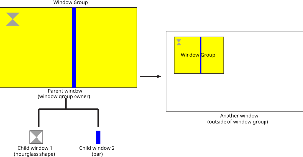
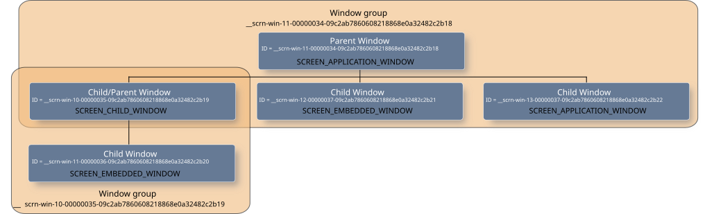

Window groups establish a hierarchy of windows that consists of a parent and at least one child window.
A window group is a tree of windows that presents itself as a single window to those outside of the window group. However, to the parent of the window group, each window within the group provides content that's independent of each other.

Window groups can be used when:
A window hierarchy is an organization of one or more window groups. What actually determines the positioning rules is where the window sits in its window hierarchy, and where a window can sit in a window hierarchy is somewhat determined by its type. For example, a window of type SCREEN_CHILD_WINDOW or SCREEN_EMBEDDED_WINDOW is meant to be parented by another window, whereas a window of type SCREEN_APPLICATION_WINDOW may have no parent at all.
A SCREEN_ROOT_WINDOW is a window that's responsible for consuming the content of all windows in its group. Screen performs compositing with this root window, but won't composite any window below it.
Note that any window within a window hierarchy can be marked as a SCREEN_ROOT_WINDOW. A parent to a SCREEN_ROOT_WINDOW won't recognize any children that the SCREEN_ROOT_WINDOW may have. The SCREEN_ROOT_WINDOW manages its buffers and its children's buffers.

A window hierarchy is established by using window groups. When establishing a window hierarchy, child windows use the parent window's SCREEN_PROPERTY_ID to join the window group. The parent window is the owner of the window group, and this is the group that child windows join. The parent queries its own SCREEN_PROPERTY_ID, as a string, and makes it available to child windows.
Make sure you don't confuse the property SCREEN_PROPERTY_ID retrieved as a character string with SCREEN_PROPERTY_ID_STRING.
SCREEN_PROPERTY_ID retrieved as a string (e.g., retrieved using screen_get_window_property_cv()) is the name of the window. This is a read-only property.
SCREEN_PROPERTY_ID_STRING is the name given to the window by the owner. This property can be used by a window manager or a parent for identification.
For example, the parent window queries its SCREEN_PROPERTY_ID like this:
...
char window_group_name[64];
screen_get_window_property_cv(screen_window,
SCREEN_PROPERTY_ID,
sizeof(window_group_name),
window_group_name );
...
Typically managers and parents use the SCREEN_PROPERTY_ID so that they don't have to explicitly create a window group to create its hierarchy. The SCREEN_PROPERTY_ID is guaranteed to be unique within the system.
The children then use it to join the parent's window group by calling screen_join_window_group(). For example, screen_join_window_group(screen_child_window, window_group_name);
Once a child joins a group, and is thus parented, it inherits display-related properties from its parent. Their values are always relative to the window above it in its hierarchy. For top-level windows (windows that are the highest in the hierarchy), their properties are relative to the dimensions of the display. Refer to Window properties.
A window alternate is a window you can use in place of another. For example, one window can contain a thumb-nail of an image while its alternate can contain the high-resolution image. Your application can make one visible over the other. That's just an example; the content of alternate windows can be completely independent. An alternate window is specified by the setting the SCREEN_PROPERTY_ALTERNATE on your window.